1. Introduction
The particle swarm optimization (PSO) that was implemented by each team member produces reasonable results with one big drawback: the PSO is incredibly slow and limit the amount of particles and generations used. Increasing the amount of particles and generations leads to intractable computation times. The task is to distribute the algorithm in order to increase the tractable amount of particles for the PSO and the number of total generations.
We derived our Python code for the PSO from the pseudocode provided by the book chapter [1].
At first we analyzed the problems of our current (non-distributed) PSO algorithms. Investigating the code and execution times reveals, the only the simulation of the simFox model is the costly part that highly influence the overall computation time. After the analysis we have the following results:
- The PSO algorithm itself is really fast. It only needs to compute some random numbers and performs simple matrix operations as addition and scalar multiplication.
- The evaluation of the simFox model for obtaining the particle performance takes a long time and is the main time-influencing factor
Based on these results we decided to distribute the evaluation of the particles rather than the complete PSO algorithm. This inherently leads to a master-slave architecture, where one master performs the fundamental PSO algorithm including the update of the parameters and several worker perform the simFox simulation.
2. Distribution Approach
Figure 1 summarizes the fundamental approach we plan to use for the distribution of the simulation workload. We decided to use a PUSH/PULL based communication architecture for the distribution of the simulation workload.
| 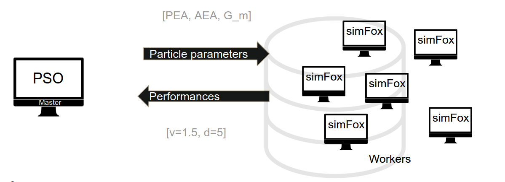 |
| Figure 1: Approach for distribution of the simulation workload |
2.2 Master
We divided the processes into two classes. We have a master process that is responsible of computing the fundamental PSO algorithm and we have multiple workers that are only responsible of evaluating particle performance by evaluate the simFox MATLAB function. Figure 2 shows the task of the master process schematically.
| 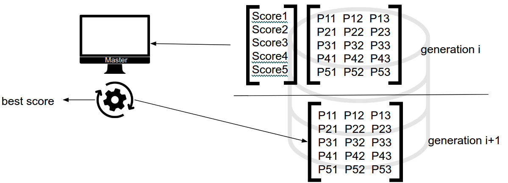 |
| Figure 2: The master process performs the update of the particle parameter vectors and computes/selects the best performing parameters. |
2.2 Workers
The only task of the worker processes is to periodically grab new particle parameter vectors, evaluate the performance using the simFox model and publishing the results afterwards. Figure 3 shows the graphical view on this algorithm.
| Figure 3: The workers periodically wait for particle parameter vectors, evaluate the performance using the simFox model and publish the results. |
2.3 PUSH/PULL Communication Pattern
We use the push/pull communication pattern for communication between the master process and the workers. Figure 4 shows the general push/pull architecture. The Producer pushes values onto a synchronized queue. These values can be pulled from the queue using the PULL directive. The communication pattern ensures that a value of the queue can only be pulled by one consumer. The consumers perform operations based on the value and push the result onto a result queue. The results are afterward collected by the result collector.
| 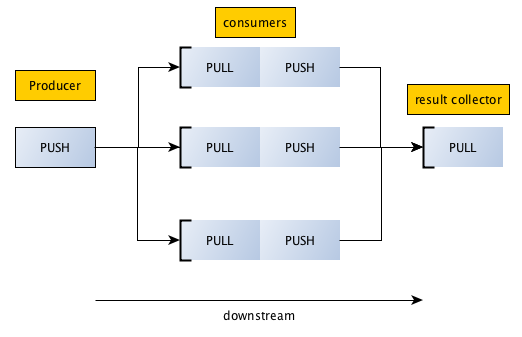 |
| Figure 4: PUSH/PULL communication pattern. Image taken from [2]. |
Here, the master process is both, the producer and the result collector. The master opens two queues, one for the particle parameters and one for the evaluated performances. The workers are consumers that read a particle parameters vector from the queue, evaluate simFox and push the result back onto the result queue. The master process then recollects the performances from the result queue. As the order will be mixed in the result queue, the particles are equipped with an id, which is copied into the result of the specific particle.
3. Implementation
We decided the use the ØMQ (zeroMQ) library [3] for the messaging between master and workers. ØMQ provides several communication patters including the PUSH/PULL pattern used here. The communication uses simple network sockets and thus it can be used in local networks and over the internet using simple and standard technologies. The library does not directly provide a binding for MATLAB and so we decided to implement the PSO algorithm and the workers in python. In python Simulink models and MATLAB functions can be called using the matlab-engine for python, which is part of every standard MATLAB distribution. Listing 1 shows how a MATLAB function can be called from python.
|
||
| Listing 1: Calling a MATLAB function from python |
On the wire, the values and parameters are communicated using JSON as the format can easily be created using python dictionaries. Listing 2 shows an exemplary JSON representation of a particle that is pushed onto the synchronized queue. The particle index is required to match the evaluated results back to the particle in the particle matrix on the master side.
|
||
| Listing 2: JSON represenation of a particle sent over the wire. |
The particle JSON is pulled by one of the workers and the simFox model is called accordingly. After the evaluation is finished and the result is available the worker pushes an evaluation results as in Listing 3 onto the result queue. Besides the performance parameters $v$ and $d$, the hostname where the worker is running and the evaluation time is communicated. These values are later used for some statistics on evaluation speed.
|
||
| Listing 3: JSON representation of the evaluation result sent back to the master |
We use simple socket based TCP-communication in the local network in the "Rechnerhalle".
4. Results of the Distributed PSO
We ran the particle swarm optimization for 100 generation with 200 particles. We chose the following parameters for the optimization:
- $PEA_{min} = 0$ and $PEA_{max} = 30^\circ$
- $AEA_{min} = -30^\circ$ and $AEA_{max}=0$
- $G_{m_{min}} = 0.5$ and $G_{m_{max}} = 2$
- $\varphi_1 = 2.5$
- $\varphi_2 = 1.3$
- $\varphi_3 = 0$
- $\omega = 0.4$
- And maximum velocity is 20% of the searchspace per component
The execution of the algorithm took in total
$$t_{total} = 10008.98s \approx 166.82min \approx 2.78h$$
and we used in total 54 workers on 14 computers. The best walking speed we achieved is
$$v_{best} = 0.9472\frac{m}{s}\, .$$
The maximum velocity is achieved using the following parameters
- $PEA_{good} = 5.36541747^\circ$
- $AEA_{good} = -9.75388972^\circ$
- $G_{mh} = 1.92412341$
4.1 Particle Evolution over Time
During the execution of the particle swarm optimization we store the particle position, the performances and the best positions in order to analyze the algorithm performance afterwards. Figure 5 shows the of the particle in the parameter space over the generations. The color of the particles indicates the performance. The initial state at generation 0 shows a uniform distribution over the parameter space. Tracing the particles in forwards time shows converges into a small region. Note that still many particles have low performances in the end, even if they are in the small region.
| 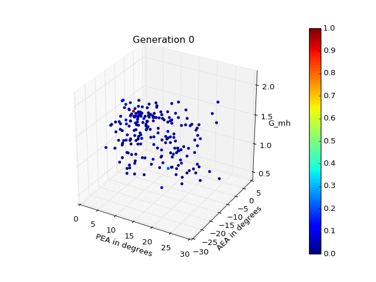 |
| Figure 5: Particle Evolution in the parameter space. |
Figure 6 additionally shows the best performing positions per particle. Similar to the plot before, the best positions initially show a uniform distribution over the parameters space. In forward time the best positions of the particles jump towards the convergence region.
| 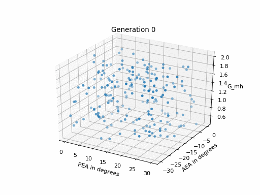 |
| Figure 6: Best position per particle over time. |
In order to get a feeling for the convergence speed of the algorithm we plot the performance of the best particle per generation in Figure 7. We can see that the performance quickly improves to a performance close to the maximum within the first 10 generations. Afterwards, the performance only slightly increases further and the curve shows some random noise due to the random nature of the PSO algorithm.
| 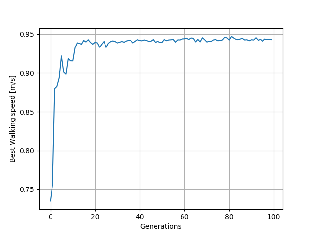 |
| Figure 7: Performance of the best particle over time. |
The plot of the maximum performance does not provide a good insight how the distribution of particle performances looks like. Therefore, we added another plot, where the distribution becomes visible in more detail. Figure 8 shows several properties of the performance distribution expressed by the particles over the generations. The grey area shows the interval between the minum and the maximum performance value. While the blue line shows the median of the distribution the blue area shows the interval between the lower and upper quartile. We can obversve that during the complete optimization procedure, many particles stay close to zero performance. As the velocity is downrated when the system does not perform a stable gait, the PSO produces many unstable solutions. After the initlization phase (ca. up to the 10th generation) the percentage of particles showing a stable gait solution are within the range of [10%, 25%]. Even though the particles converge to region visible in Figure 5, the percentage of stable solution within a single generation does not increase. This appears strange and unintended to us. A way of coping with that issue might be the decay of the inertia weight or further decaying the maximum allowed velocity over the evolution time.
| 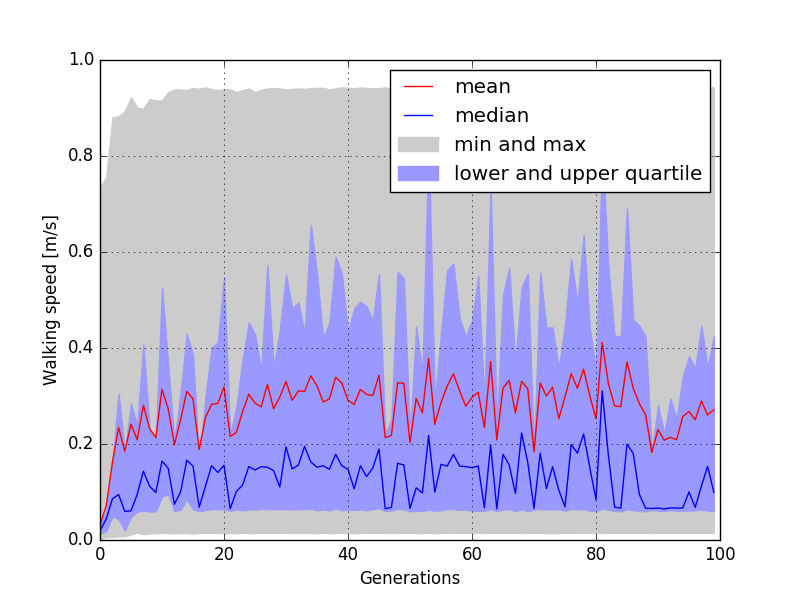 |
|
Figure 8: Distribution of the particle performance over the generations. The gray area show the interval between the minimum and maximum performance. The blue area show the area between the lower quartile (25%) and upper quartile (75%). The blue line shows the median. |
4.2 Workload Distribution
We used 14 computers and 54 workers for the optimization. We used (virtually) local hosts in the Rechnerhalle as the fat server computer (lxhalle.in.tum.de) was constantly occupied by the other groups and working to capacity. Each computer had a Intel(R) Core(TM) i5-6600T CPU with four cores and an maximal frequency of 2.7GHz. As we used a simple TCP-based communication we could also use multiple computers without any remarkable speed loss. However, the small computers only have four cores so it does not really makes sense to execute more than four worker processes. Therefore, we used many computers with a few workers each. Each team member logged in on multiple computers and started the workers. As all the workers are identical there is no need to change the code. We used a git repository at the LRZ to keep the code consistent.
For each particle we store the host where is was computed and the required computation time for the simulation. Figure 9 shows two bar charts. The diagram on the top shows the workload in terms of total computed particles per host. While two of the hosts run three workers the remaining hosts run four workers each. Without further programming effort, the zeroMQ messaging library equally distributes the workload among the hosts. The lower diagram shows the mean computation time required for the simulation of a single particle per host. It varies in the range of ten to twelve seconds. Note that the simulation is strongly influenced by the stability of the gait represented by the particle values. The sooner the simulation fails, the shorter is the simulation time and vice versa. For quickly failing simulations we observe times of ca. three seconds while a succeeding simulation can take up to half a minute.
| 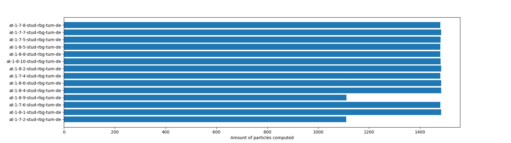 |
| 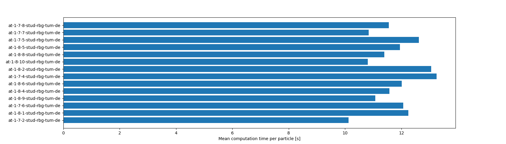 |
| Figure 9: Workload and mean computation time per host. While two out of the 14 hosts execute three workers, the remaining hosts execute four workers each. |
4.3 Resulting Gait with the Optimized Parameters
We used the provided Simulink model with the implemented neural network controller to validate if the solution we found does in fact results in a stable and fast gait. We set the param variable to the parameters we found using the particle swarm optimization. Figure 10 shows the resulting gait.
| 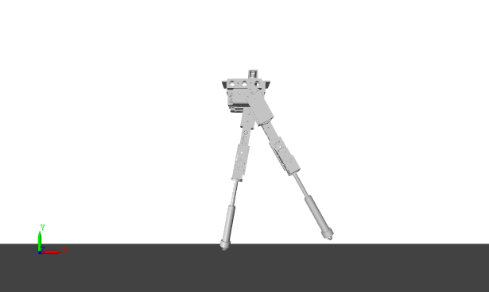 |
| Figure 10: Resulting gait using the optimized parameters. |
5. Discussion & Conclusion
An advantage of PSO in comparison with other genetic algorithms is that PSO has a memory of the population’s (or neighbors’) best position and its current position, which can be interpreted as two populations. This allows for a greater diversity and exploration compared to a single population, which would have been the case of elitism. In addition, the inertia of the particle movement can allow for a faster convergence in the direction of the gradient and more variety or diversity in search trajectories. The PSO is a continuous technique that works well for continuous problems, but not for discrete or combinatory problems compared to other GA. However, the PSO does not guarantee that an optimal solution is ever found. As the PSO is not using a gradient of the problem being optimized, the problem does not require to be differentiable as in other classical optimization strategies.
By visualizing the swarm particles in an animated plot, we can identify and recognize the biological behavior that the algorithm is based on. Each particle has its own autonomous behavior being independently updated (not crossover for example). Moreover, we see the influence of the performance of the population’s best in each particle that pulls it towards the rest of the swarm.
The initial distribution of the particles has a high impact on the further distribution. As the neighbourhood is spanned over all particles in our model, there is a drag to the global best result of the last generation which is weighted by $\varphi_2$ hyperparameter. Since the provided solution space seems to contain one global maximum this is not an issue. But in a solution space with multiple local maxima this approach prevents finding those.
In Figure 8 one can observe that the majority of the particles at each generation are performing poorer than the average score at the corresponding generation. This could be caused by the exploration behaviour of the swarm. In this case this is not a bad development since it ensures a better evaluation of the solution space in the near of the best known results. If more of the particles would "sit" in the best so far known solution the probability to find other good solutions would decrease. This behaviour can most likely be configured with the $w$ and $\varphi$ hyperparameters.
Initially we expected the function in Figure 11 to rise over the higher generations. But it oscillates and even drops at the end. This could be also caused by the exploration behaviour. It can also be an indicator for the very narrow area in the solution space where the JenaFox model performs well.
| 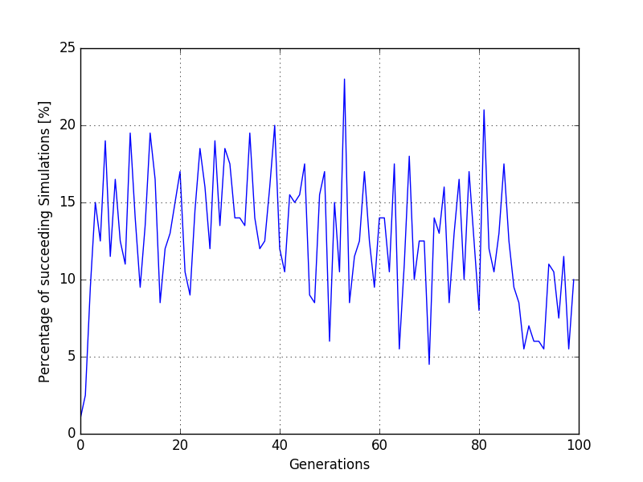 |
| Figure 11: Percentage of succeeding particle simulation (>=5m) |
The PSO was indeed faster with paralelization. Since it took approximate 2.78h for the calculation. For comparison Alexander did the same calculation with the same hyperparameters on one core of an Intel(R) Core(TM) i5-7600 CPU with 3.5GHz in 35h. He got nearly the same result of $v_{best} = 0.9462\frac{m}{s}\, $.
Since the algorithm distributes work based on the workload of every host and not based on the amount of work each host gets, it can also be used with different hosts without unnecessary waiting threads. An exception of this rule is if there are as many threads as particles per generation. Then the evaluation time of the generation is directly dependent from the slowest thread.
References
[1] Dan Simon. Particle Swarm Optimization. 2001
[2] Python documentation of Zero MQ: http://learning-0mq-with-pyzmq.readthedocs.io/en/latest/index.html
[3] ØMQ: http://zeromq.org/
Our Source Code
Our source code can (besides the attached files) be found on the LRZ Gitlab: https://gitlab.lrz.de/crzy_optimizers/particle-swarm-optimization
| Path | Type | Description |
| plots | Directory | Contains python/matlab scripts to generate plots. |
|
results |
Directory | Contains matlab workspace files of performed optimization runs and the log file of the final run. |
|
clear_queue.py |
Python script | Clear the ØMQ queue. This is handy if a run was stopped manually or through an error. |
| psomaster.py | Python script |
Script which is run by the master. |
| psoslave.py | Python script | Sctipt which is run by the slave. The IP address of the master should be configured first. Usually started with the startworkers.sh script. |
| startworkers.sh | BASH script | Script to run on workers. Usage: ./startworkers.sh [number of processes] |
| timer.py | Python file | Contains the Timer() functionality which is used for time measurement. Not callable. |